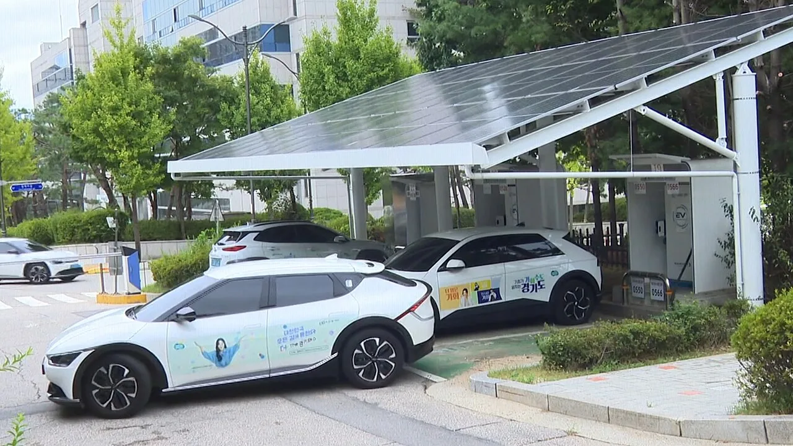
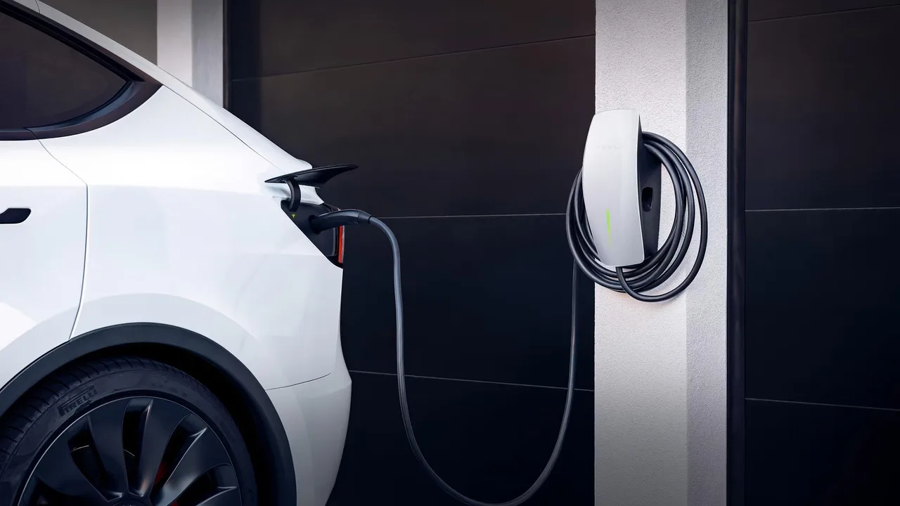

▲ 내년 전기차 보조금 지원 물량이 30만 대에서 43만 대로 늘어난다 ⓒ Wikimedia Commons
1. 예산 2조 1,403억 원
기후에너지환경부가 내년 전기차 보급 예산을 2조 1,403억 원으로 편성했습니다. 역대 최대 규모입니다.
올해 예산은 1조 6,114억 원이었습니다. 32.8% 증가한 셈입니다.
지원 물량은 30만 대에서 43만 대로 늘어납니다. 13만 대가 추가되는 것이고, 비율로는 43% 확대입니다.
여기서 첫 번째 숫자 읽기가 나옵니다. 예산은 32.8% 늘었는데 물량은 43% 늘었습니다. 대당 평균 지원액은 오히려 줄어드는 구조입니다. 물량을 넓히는 쪽에 무게를 뒀다는 뜻입니다.
2. 차종별로 어디에 배정됐나
| 차종 | 올해 | 내년 |
|---|---|---|
| 승용차 | 26만 대 | 36만 8,000대 |
| 화물차 | 3만 5,837대 | 6만 1,000대 |
| 승합차 | - | 4,700대 (신설) |
| 합계 | 30만 대 | 43만 대 |
증가율로 보면 화물차가 가장 큽니다. 3만 5,837대에서 6만 1,000대로 70% 넘게 늘었습니다. 승용차 증가율(41.5%)보다 높습니다.

▲ 영업용 차량은 하루 주행거리가 길어 전환 효과가 크다. 화물차 물량이 크게 늘어난 배경이다 ⓒ Wikimedia Commons
승합차 4,700대는 새로 생긴 항목입니다. 어린이 통학버스와 마을버스처럼 운행 패턴이 정해진 차량이 대상이 될 가능성이 큽니다.
3. 개별소비세와 맞바꾼 것
이번 확대에는 조건이 붙어 있습니다. 내년부터 전기차 개별소비세 감면 한도가 300만 원에서 200만 원으로 줄어듭니다.
정부의 설명은 "줄어드는 세제 혜택만큼을 재정으로 전환해 보조금으로 쓴다"는 것입니다. 세금을 깎아 주는 대신 보조금으로 직접 주겠다는 구조입니다.
소비자 입장에서 이 교환이 유리한지는 차값에 따라 갈립니다. 개별소비세 감면은 차값에 비례하므로 비싼 차일수록 혜택이 큽니다. 반면 보조금은 상한이 정해져 있습니다. 고가 전기차를 사는 쪽은 손해를 보고, 중저가 전기차를 사는 쪽은 손해가 적거나 이득이 되는 구조입니다.

▲ 지원 물량이 늘어도 대당 금액과 지자체 예산 소진 시점은 별개의 문제로 남는다 ⓒ Wikimedia Commons
4. 배달용 전기 이륜차는 최대 230만 원
배달용 전기 이륜차 지원도 늘어납니다. 예산이 160억 원에서 230억 원으로 증액됐습니다.
추가 지원 비율은 10%에서 50%로 올라갑니다. 이에 따라 최대 230만 원까지 지원이 가능해집니다.
배달 이륜차는 하루 주행거리가 길어 전환 효과가 큰 영역입니다. 같은 예산으로 줄일 수 있는 배출량이 승용차보다 크기 때문에, 지원 비율을 높이는 판단이 나온 것으로 보입니다.
5. 그래서 내가 받는 금액은 얼마인가
대당 보조금 단가는 이 발표만으로는 알 수 없습니다. 매년 초 확정되는 보조금 산정 지침에 따라 결정되기 때문입니다.
다만 방향은 읽을 수 있습니다. 예산 증가율(32.8%)이 물량 증가율(43%)보다 낮으므로, 산술적으로 대당 평균 지원액은 올해보다 낮아집니다.
여기에 성능 계수가 겹칩니다. 국내 보조금은 주행거리, 충전 속도, 에너지 밀도 등에 따라 차등 지급됩니다. 같은 예산이 늘어도 차종에 따라 받는 금액은 크게 달라집니다.

▲ 보조금 총량이 늘어도, 개별 구매자가 받는 금액은 차종별 성능 계수에서 갈린다 ⓒ Wikimedia Commons
6. 올해 사야 하나, 내년에 사야 하나
첫째, 고가 전기차라면 올해가 유리할 수 있습니다. 개별소비세 감면 한도가 300만 원에서 200만 원으로 줄어드는 만큼, 차값이 높을수록 내년에 잃는 금액이 큽니다.
둘째, 중저가 전기차라면 내년이 나쁘지 않습니다. 물량이 43만 대로 늘어나면 지자체 예산 소진으로 대기하는 일이 줄어듭니다. 그동안 상반기에 계약하고 하반기까지 보조금을 못 받는 사례가 반복돼 왔습니다.
셋째, 화물차와 이륜차는 내년이 확실히 낫습니다. 물량 증가율이 가장 크고, 이륜차는 추가 지원 비율 자체가 10%에서 50%로 올라갑니다.
넷째, 확정 시점을 기다려야 합니다. 위 내용은 예산 편성 단계입니다. 국회 심의를 거쳐 확정되고, 차종별 단가는 내년 초 지침에서 정해집니다.
정리하면 이렇습니다. 내년 전기차 정책의 방향은 "더 많은 사람에게, 대신 조금씩"입니다. 총액은 늘었지만 나눌 사람이 더 많이 늘었고, 그 재원의 일부는 개별소비세 감면을 줄여 만든 돈입니다. 계산은 차값에 따라 각자 다르게 나옵니다.